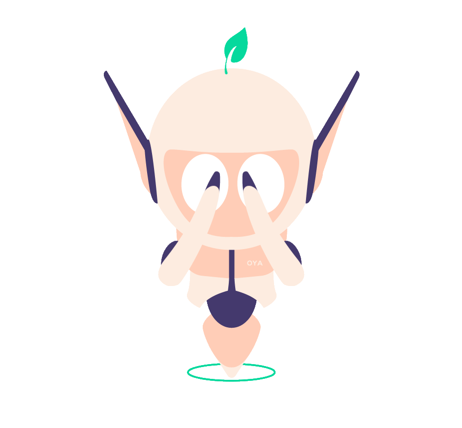
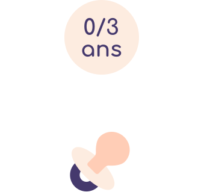
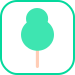

C'est parti !
Trop de choix ? Bonjour ! Je m'appelle Oya Je vais t'aider à trouver le parc idéal pour ta sortie!

Quand veux-tu t'y rendre ?
Clique sur le moment de la journée qui te convient le mieux !
Quel âge ont les enfants ? !
  Je le dirais à personne c’est promis !
Glisse les icônes dans les bulles en fonction de tes préférences


Pour les critères n’ayant pas d’importance pour toi, laisse les à leur emplacement initial
Parlons faune et flore maintenant.
De la même manière que précédemment, place les icônes en fonction de tes préférences !




Faisons le plein d'énergie !